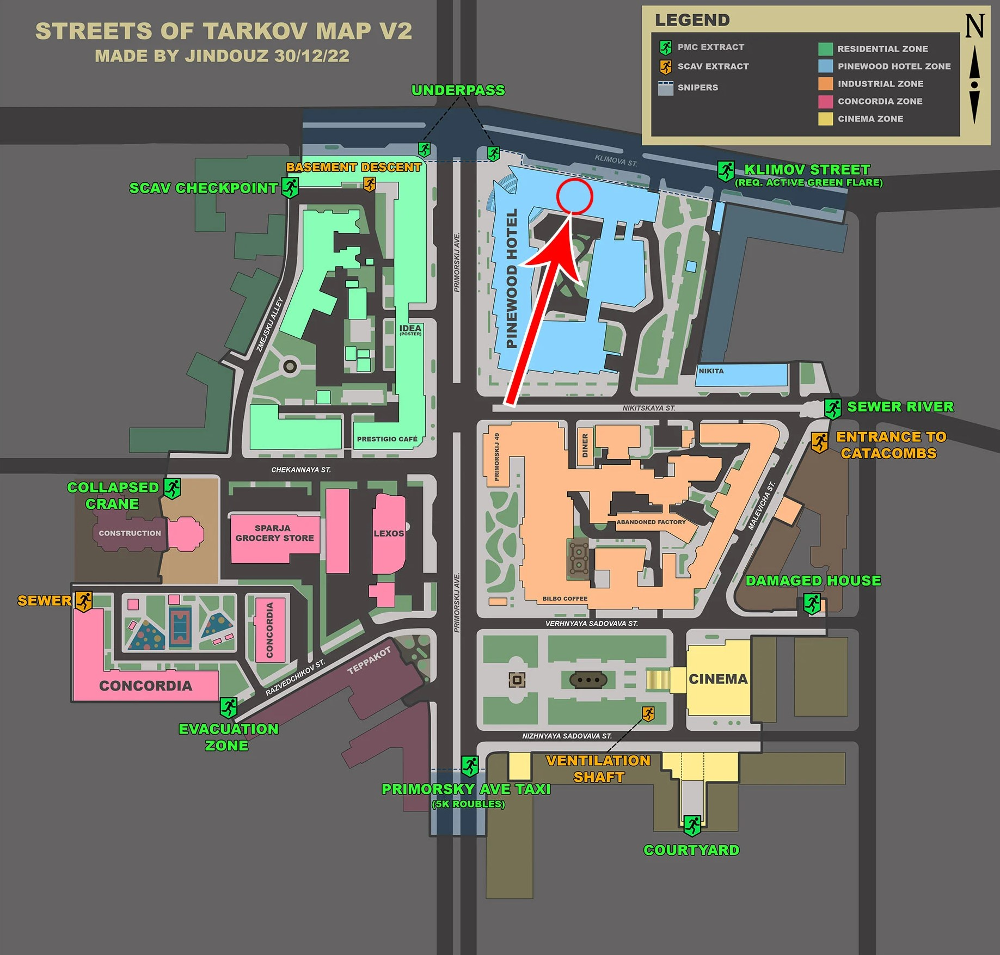
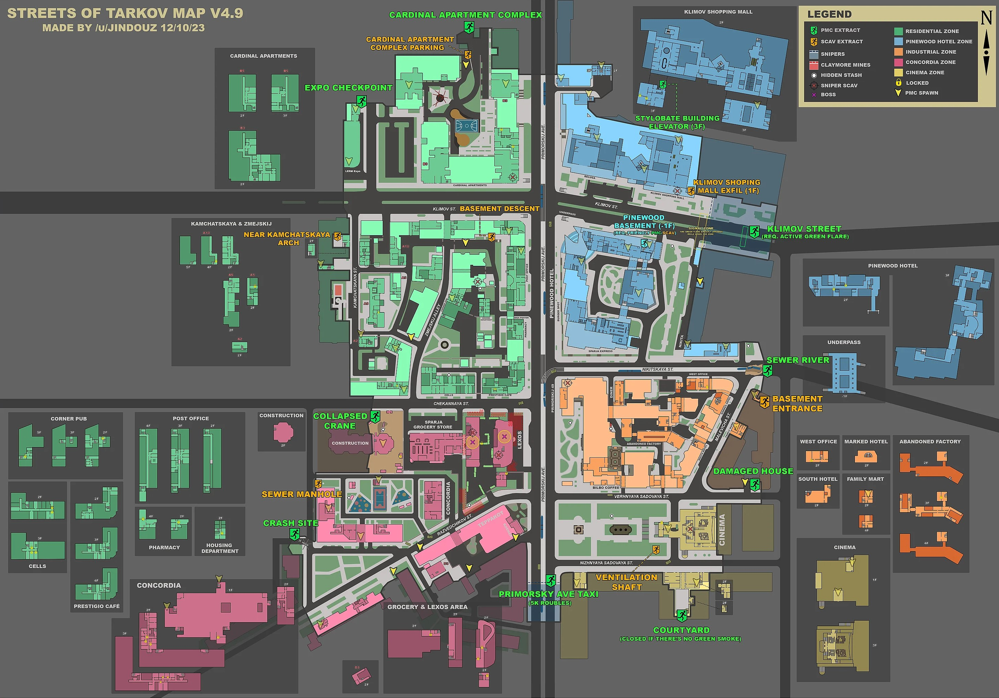

«Улицы Таркова».
Дата добавления: 28 декабря 2022 года.
Версия: 0.13.0.0
Дата добавления: 28 декабря 2022 года
Версия: 0.13.0.0
Июнь 2021 г. (Анонс). Первый полноценный геймплей карты был показан на мероприятии Gaming Show 2020 . Уже тогда стало понятно, что это будет огромный городской район, а не точечная локация .28 декабря 2022 г. (Релиз — Патч 0.13.0.0.21469). Самое важное событие. Карта была официально добавлена в игру после долгих лет разработки. Важно: В игру попала только первая часть города; разработчики пообещали расширять её в будущем .10 августа 2023 года локация была расширена.
(28 декабря 2022 года)

10 августа 2023 года локация была расширена.
